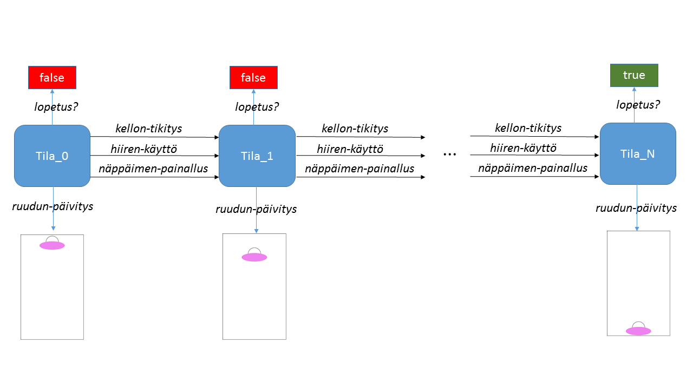

5.2 Interaktiiviset ohjelmat
Animaatioista on lyhyt matka interaktiivisiin ohjelmiin kuten peleihin. Animaatiossa oli käytössä yksi funktio, joka hoiti yhdenlaisia tapahtumia: kellon tikityksiä. Kellon lisäksi World-ohjelma voi ottaa vastaan myös näppäimistön tai hiiren kautta tulevia tapahtumia.
Jokaista tapahtumaa varten ohjelmoijan tulee tarjota funktio, joka hoitaa kyseiset tapahtumat. Universe-kirjastossa mahdollisia tapahtumia on kolme: on-tick, on-key ja on-mouse. Lisäksi voit ilmoittaa predikaatin, joka testaa milloin ohjelma voi sulkea itsensä.
Jokainen tapahtumia hoitava funktio saa argumenttina ohjelman tilan ja se palauttaa ohjelman uuden tilan. Tätä voidaan kuvata tilasiirtymäkaaviolla.

big-bang käynnistää interaktiivisen ohjelman asettamalla ensimmäisen tilan Tila_0. Tapahtumien hoitamiseen ohjelmoidut funktiot kellon-tikitys, näppäimen-painallus, ja hiiren-käyttö muuntavat tilan uudeksi tilaksi. lopetus?-predikaatin avulla tutkitaan onko ohjelma vielä kesken vai voidaanko se lopettaa. päivitä-näyttö piirtää ohjelman tilan kuvaksi, joka näytetään käyttäjälle animaatioikkunassa.
Jotta edellä kuvattu World-ohjelma toimisi, kaikki mahdollinen tilatieto on tallennettava tila-tietorakenteeseen. Tila voi olla mitä tahansa tietotyyppiä mukaanlukien tietue ja lista.